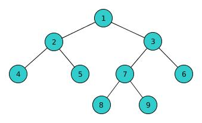

A teoria dos grafos é um ramo da matemática que estuda as relações entre os objetos de um determinado conjunto. Para tal são empregadas estruturas chamadas de grafos, G(V,E), onde V é um conjunto não vazio de objetos denominados vértices e E é um subconjunto de pares não ordenados de V, chamados arestas. Dependendo da aplicação, arestas podem ou não ter direção, pode ser permitido ou não arestas ligarem um vértice a ele próprio e vértices e/ou arestas podem ter um peso (numérico) associado. Se as arestas têm uma direção associada (indicada por uma seta na representação gráfica) temos um dígrafo (grafo orientado). Um grafo com um único vértice e sem arestas é conhecido como grafo trivial.